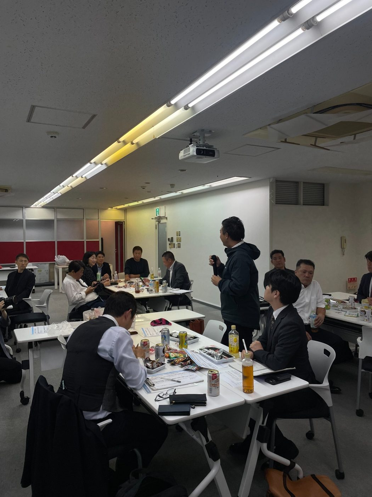
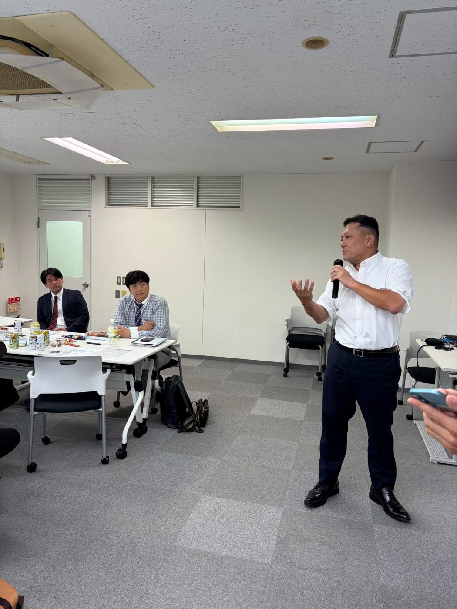
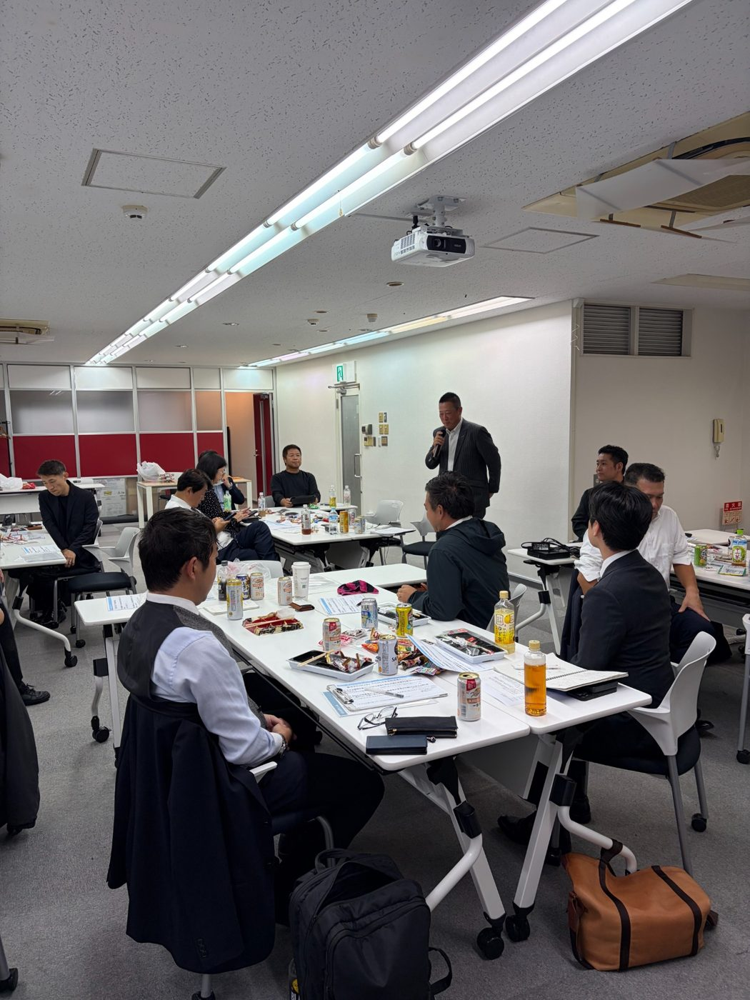

MAIN THEME
経営12ヵ条 第4条「誰にも負けない努力をする」〜地味な仕事を一歩一歩堅実に、弛まぬ努力を続ける〜
第1部｜経営12ヵ条
第4条を講話とグループディスカッションから深掘りしました。
第2部｜フィロソフィ
「ベクトルを揃える」をテーマに学びました。
第3部｜京セラ式コンパ
経営・仕事での実践について本音で語り合いました。
PHOTO
当日の様子



MATERIALS
当日の資料
当日スクリーンで使用した資料と、参加者へお渡しした持ち帰り用・お土産用の補足資料を残しています。
※PDFファイル本体をGitHubへ追加すると、上のボタンからそのまま閲覧できます。